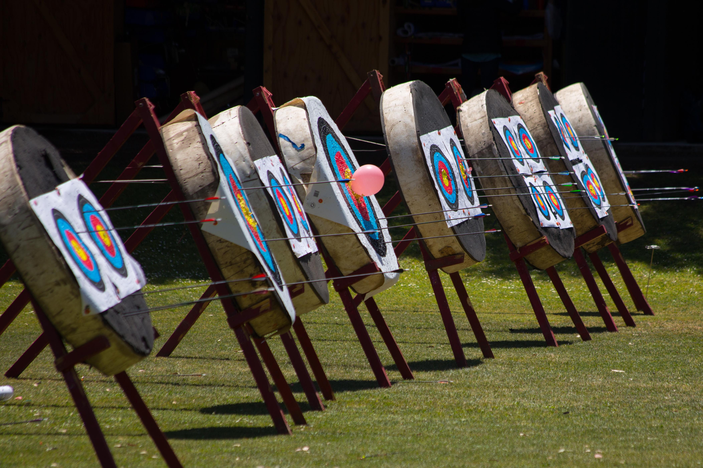
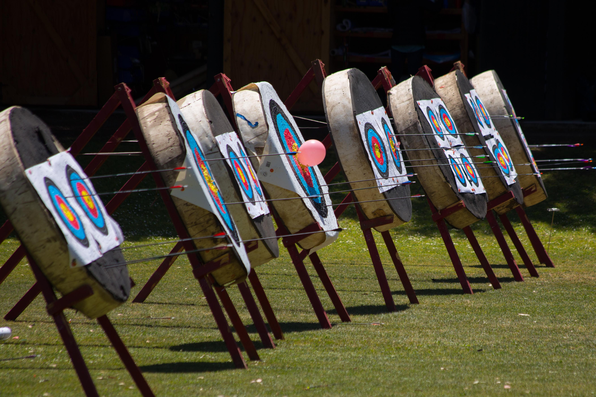

Stanford Archery
 

For both sessions, there are two groups, Experienced and Novice, based on several factors including age, experience, and competitive goals.
The Experienced camp is designed as a competition training camp that focuses not only on form and shooting, but also on all the other critical parts of archery that competitive shooters must know such as bow maintenance and tuning. Archers currently and regularly involved in Stanford's JOAD program should sign up for the Experienced camp.
The Novice camp will teach similar skills, though at a slightly more basic level. It is intended for kids who are new to the sport and looking for a positive first experience with archery.
During the camp, archers will not only become proficient in shooting a bow, but will also receive instruction on other archery essentials such as bow tuning, arrow maintenance, self-analysis, troubleshooting and tournament etiquette. Additional activities will include arrow making, target making, and various fun shoots (balloon shoots, etc).
Both beginner and advanced archers will receive high level instruction from experienced members of the Stanford Archery Team. Because of the excellent student-to-counselor ratio, the specific camp activities can be tailored to the attending archers.
For many of the archers, the camp is a launching pad for participation in our JOAD (Junior Olympic Archery Development) program which meets every Sunday. Learn more about the Stanford JOAD Program and the national JOAD program.
Pricing
The cost for one session is $850. We offer a $75 discount if your child has attended at least 5 of our JOAD sessions in the past year (be sure to note that when you sign up).
Dates
There are two consecutive sessions, each five days long (Mon-Fri) from 9am-3pm.
Session 1: Monday, June 18, 2018, to Friday, June 22, 2018
Session 2: Monday, June 25, 2018, to Friday, June 29, 2018